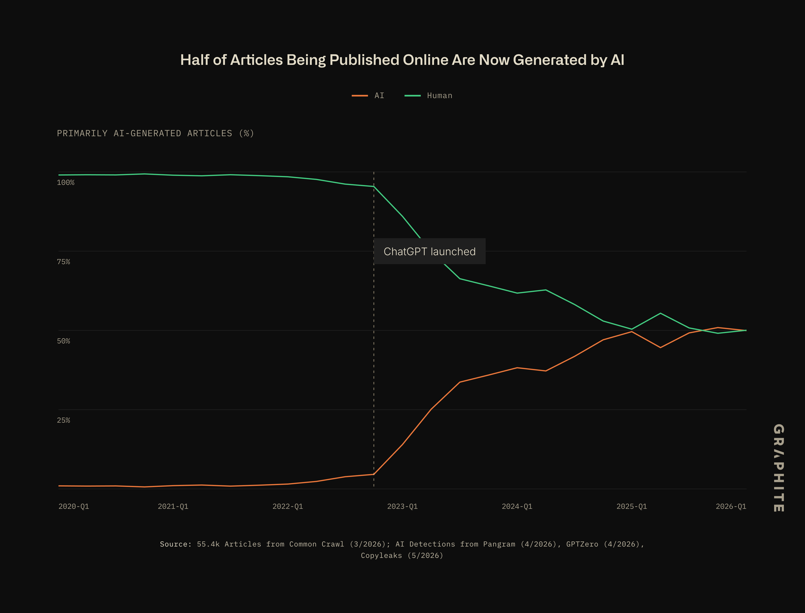

Lessons from a loser
I have been blogging for the past couple of months to see if there is any traction from the audience. With the decreased attention span in recent times, there has been a record explosion in the amount of content generated by AI. Although this is the case, there has been a period of so-called cool AI content for a while. This is primarily due to the most professional bloggers adapting content using AI, and this is the primary boom of AI-aided online content. Well, in all honesty, what is good is very subjective when people are trying to put their opinion out there. After this brief period, I would say about the end of 2023 to early 2024, there has been an increased amount of AI-generated textual content which is increasingly sloppy. In the initial days there were only a few libraries like transformers, and the context window for such models was stupendously small compared to the current models, and the ones using the models were mostly people who were well into AI, and the chat interface was not very prevalent. Much of the utility was to build spell-checker libraries, etc.

SourceBut after this brief period there was almost an explosion of AI-generated content online, almost 41.8% by Q3 of 2023 of all generated textual content. Although the amount of content exploded, from my personal experience people were still a bit enthusiastic to read what had been presented to them. There was at least some optimism to even look at content, which gave rise to several copycat blog posts and interactive blog posts. This was when things started going down south. There was an explosion of advertisement-style text content patched all over the internet. I have seen entire git repositories with not a single sentence written by a human being. A lot of blogs started using generic, same-rut concepts again and again. Those weird symbol ticks and the increasingly unhuman-like text patched all over the internet. By early 2025, with the advent of agents, writing fundamentally changed. No human I can think of can memorize an entire list of variable names in a coding project and humanly refer to a particular line, word and string together words that do not mean anything. Although the text might have typos or poorly formed sentence structure, when you usually write something, the message is conveyed.
I took advantage of the initial boom of the AI-aided content era. I usually write the first draft of it. The time to reread, edit around the ideas and fix the typos usually took a very long time, so I used AI to revamp the things that I wrote. Although people were skeptical about the work that I produced, they usually gave it a shot in the pre-2024 era. I do not come from a well-connected network and do not have a lot of published work to back my work. Although this was the case, there was an occasional note of admiration from a fellow reader. Post Q4 of 2025, people became averse to written text, and the mindless scroll culture, of which I am a victim, did not help as well. The most recent comments I get nowadays are accusations of dumping AI slop on people. Well, in all honesty, I did use AI, but it was to edit around the text. As a non-native speaker, it is a whole lot of help to have a tool that could assist you in expressing yourself. In their defense, the sloppified gibberish is everywhere. I call it the shoggoth with mad cows. Although this is very disheartening to watch, I am helpless in this regard. The industry is fundamentally changed. So I thought to myself: I can either be sad about it, or just maybe, if I can find guiding principles, I could identify characteristics of the desloppification of the content.
Here are some of the things that I picked up:
Aggressively deslopify the written content posts
- Drilling down: which of the elements actually work? Through analysis of what should be shown.
- What elements should you actually focus on? What makes a person actually sit through and read a post of yours?
- Think about it a bit. Ask yourself this: how much slop is a good slop? Which of the texts or phrases throw people off?
- Don't go for fancy designs. If your post has more than 3 colors, it looks sloppy to a human eye.
- Remove cards, make them dumb links. That is what humans are wired to look at.
- Long posts are intimidating to people unless they are invested in the idea. Write a description on the home page and a link to where that might take them. People usually read what they want to. The era of clickbait is gone. People don't read through that sort of content anymore.
- Don't do a million things. Do 3 things really, really well before you move on. Find your demographic.
- Blog consistently and channel the writing energy. Never, and I mean never, write the first draft with AI. Pour everything you can think of down on paper and you can slop later.
- Don't lose stuff. If you worked on it, document it. Write more than you read. With multiple iterations of back and forth with an AI model, you are bound to lose stuff.
- Make it aggressively human. People are averse to anything remotely generated by AI. Strip things to bare bones: Obsidian, HTML, publish works.
A 300-word introduction to a blog post is important, or else people won't touch it. Spend some time on it. It doesn't matter how hard you work or how long you spend, people see the things you share.
Creation more than consumption: put things out there. It is very important. People do not know you unless you pester them. When you do, please make sure that they actually spend the limited time they have on actually reading your stuff.
Focus on skimming: bold titles, bullet points. These are what people look at when they skim through words quickly. If a paragraph is long, they just skim through it without taking away anything.
Lessons from biology
Only medical professionals read medicine papers. Why, you might ask? It is simply way too complex, with a very different taxonomy than what regular people are used to. When you blog, write it simple. Dumb it down, dumb it down to the absolute bare minimum.
The human era of writing is real. They want flawed but good writing. They want to see it humanized.
People don't want to read your stuff. They want to read stuff in general, because they want to, or they get something out of it, either monetary or simple enjoyment. Make them want to read your stuff. An intro is important. They won't read it if it doesn't matter to them, no matter how good the writing is or how good the concepts you are presenting are. If they read it, they are invested in you. They will come back for more. Remember, first impressions matter a lot. Fix the landing page. People are inherently biased and they will follow the trend and look at stuff only if someone famous endorses it. It is the hard truth of the world we live in. If you are a random person, people go in assuming the worst. Your job is to get their attention.
People in your field are different from the general public. They don't click on a post if it looks too clickbaity. Make it grounded but real. Unless you are actively endorsed by any of the cool people, you have little exposure. Remember this and do what you can to grab their attention.
Look at a bunch of blogs and classify them as cool or not based on what you think.
List of things that are okay when done so with AI
- It is okay to generate code with AI.
- It is not okay to design with AI.
- It is okay to correct spelling with AI.
- It is not okay to use
--;etc. This instantly throws people off. - Bullet points are okay with AI. Anything that strings together more than 10 continuous words will instantly throw people off.
World is a terrible place because they don't want to read your work. You have to make it worthwhile for someone to actually read it........